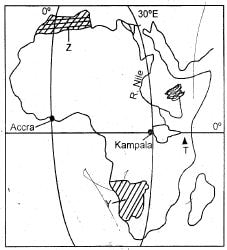
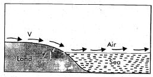

1. The highest part in Arao area is around
2. Land disputes between neighbours living near the school in Ziwa town should be reported to
3. The railway line is MAINLY used to transport?
4. The approximate area in square kilometres of the planted forest is
5. Land in Arao area rises towards
6. The MAIN factor that influenced the location of Kata town was presence of
7. Which one of the following statements BEST describes Arao area?
8. Which one of the following descriptions about Homo erectus is CORRECT? He
9. Which one of the following countries in Africa borders the Mediterranean Sea?
10. Which one of the following groups of people belong to a nuclear family?
11. Which one of the following livestock breeds is an exotic dairy breed reared in Kenya?
12. Which one of the following methods of communication was used to send messages over long distances before the colonial period?
13. The main role of the Laibon in the Maasai community was to
14. Which one of the following minerals is CORRECTLY matched with the county where it is mined in large quantities?
Minerals - Country
15. Which one of the following communities in Eastern Africa belong to highland Nilotes?

16. What will be the time in Accra when the time in Kampala is 11,20am?
17. The mountain marked T is
18. During the partition of Africa the .county marked Y was colonised by
19. Which one of the following statements about the climatic region marked Z is CORRECT?
20. Which one of the following is a county government expenditure in Kenya
21. Which one of the following methods was used to teach moral values to children in the past? Use of
22. Maize is grown in Kenya MAINLY for
23. Which one of the following statements about Seyyid Said is CORRECT? He
24. Which one of the following groups consists of fresh water lakes in Kenya ONLY?
25. Which one of the following pre - historic sites is CORRECTLY matched with the country it is found
26. Japan exports more fish than Kenya because
27. The MAIN reason for rural to rural migration in Kenya is
28. The deputy headteacher in a school is entitled to
29. The MAIN reason why the youth were involved in ceremonies before the coming of the Europeans to Kenya was to

30. Which one of the following statements about the wind marked V is CORRECT?
31. The process shown in the diagram illustrated above represents
32. Three of the following statements about the National flag of Kenya are true. Which one is NOT?
33. Which one of the following countries in Eastern Africa is a member of the Commonwealth Organization?
34. Which one of the following groups consists of countries that are members of Southern Africa Development Community (SADC)?
35. Below are facts about a certain mineral
(i) It is used to make dyes.
(ii) It is obtained from water.
(iii) It is Kenya’s main mineral export
36. Which one of the following mountains is CORRECTLY matched with the country it is found?
37. Which one of the following resulted from the interaction of the Bantu and the Cushites before the 19th Century?
38. Pupils BEST obey school laws if
39. Below are conditions for growing a certain crop
(i) Cool highland temperature
(ii) Fertile volcanic acidic soil
(iii) High rainfall
40. Which one of the following groups consists of crops grown by communities in Kenya during the pre-colonial period?
41. Which one of the following methods is used to irrigate crops at Perkerra irrigation scheme?
42. Which one of the following facts about population of Kenya is TRUE?
43. Road accidents can be prevented in Kenya if
44. The weather instrument illustrated below is used to
45. Oletip wants to set up a bread making factory. The MOST important factor to consider is
46. Which one of the following early political associations in Kenya is CORRECTLY matched with its leader?
47. Which one of the following countries got support from Organization of African Unity (OAU) in its armed struggle for independence?
48. Who among the following early visitors to Eastern Africa discovered that lake Victoria was the source of river Nile?
49. As a result of their collaboration with the British the Maasai people
50. Which one of the following is a characteristic of subsistence farming?
51. Which one of the following statements about Kalahari desert is CORRECT?
52. Relief rainfall occurs when
53. The cushites living in Kenya migrated from the horn of Africa in search of
54. A school assembly is important MAINLY because
55. Moraa a seven year - old girl has not been taken to school by her parents. She has been denied the right to
56. Different neighbouring communities in Kenya can live in harmony if
57. Which one of the following statements about the Attorney General in Kenya is TRUE? He
58. Who among the following is NOT a member of the executive?
59. Discussions in the county assemblies are controlled by
60. The MAIN functions of the regular police officers is to
SECTION B
CHRISTIAN RELIGIOUS EDUCATION
61. When God created Adam he gave him the work of
62. Which one of the following was a promise of God to Abraham?
63. A lesson Christians learn from the story of Joseph in prison in Egypt is that
64. Moses went to live in Midian because
65. The activities on the night of Exodus teaches Christians that
66. God guided the Israelites during the exodus by
67. "(Do not commit adultery” (Exodus 20: 14) This commandment was broken by
68. Which one of the following events took place during the reign of Joshua?
69. Prophet Elijah multiplied the food o9f a poor widow in
70. At the age of twelve years Jesus was taken to the temple in Jerusalem to
71. When Anna received baby Jesus in the temple she said that the child would
72. "Do not put God your Lord to test” (Luke 4) Jesus said these words to
73. Which one of the following groups is made up of disciples who saw the transfiguration of Jesus?
74. From the healing of the paralysed man Christians learn the value of
75. The parable of the widow and the judge teaches Christians to be
76. Which one of the following events took place during the last supper?
77. Which one of the following claims was brought against Jesus when he was tried before Pilate?
78. Some women went to the tomb of Jesus early in the morning to
79. The presence of the Holy spirit on the day of the pentecost was symbolised by
80. The seven deacons were appointed MAINLY to
81. Which one of the following books is CORRECTLY matched with its category?
82. Which one of the following practices is done in traditional African worship?
83. In traditional African communities people who die are said to
84. Names of ancestors are mentioned in traditional African societies in order to
85. Some people in traditional African communities pray under some trees because
86. Charlie picks a hundred shillings note near his classroom. As a Christian be should
87. Pupils should sweep their classrooms MAINLY because
88. Sexual misuse in Christianity is discouraged MAINLY because
89. Christians can BEST use their wealth by
90. Christianity in Kenya was introduced by